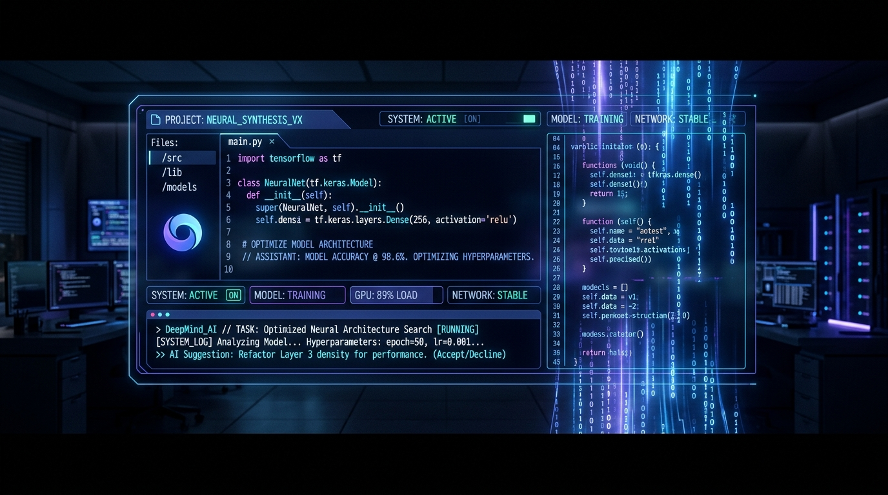
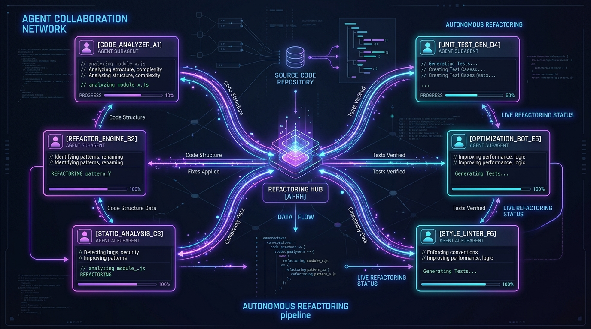

O Terminal do Futuro é
Agentizado e Autônomo
O Antigravity CLI (agy) eleva a programação assistida por IA a um novo patamar. Execute subagentes paralelos, agende rotinas cron, integre servidores MCP e gerencie seu código com precisão cirúrgica sem sair da linha de comando.

Tudo o que o Antigravity CLI é capaz de fazer
Uma plataforma completa projetada para transformar ideias complexas em código pronto para produção com autonomia total.
Orquestração de Subagentes Autônomos
Delegue partes complexas do trabalho para subagentes dedicados (`research`, `self`, ou customizados). Cada subagente opera em seu próprio contexto com workspaces ramificados (`branch`) ou compartilhados (`share`).
Tarefas Assíncronas em Segundo Plano
Execute compilações, testes ou servidores sem pausar o chat. O CLI gerencia os processos via `run_command` assíncrono e notifica reativamente quando os resultados estão prontos.
Agendamento & Cronjobs Nativo
Configure temporizadores únicos ou rotinas recorrentes em sintaxe cron padrão (ex: `*/5 * * * *`). Defina condições de cancelamento dinâmico para não desperdiçar recursos.
Ecossistema de Customização Completo
Crie Skills reutilizáveis (`SKILL.md`), estabeleça diretrizes de estilo globais em `rules/`, gerencie Plugins e conecte servidores MCP (`mcp_config.json`) com ciclo de vida com Hooks.
Comandos Slash Interativos
Acione fluxos avançados com comandos intuitivos no TUI: `/goal` para missões de longa duração, `/plan` para estruturação de etapas, `/grill-me` para refinamento de arquitetura e `/learn` para memorização.
Artefatos Visuais e Modificações Precisas
Gere documentações ricas em Markdown com diagramas Mermaid, carrosséis de imagens e aplique edições cirúrgicas no código (`replace_file_content` e `multi_replace_file_content`).
Veja o Antigravity CLI em Ação
Explore como o assistente interage no terminal em cenários reais de engenharia de software.
Trabalhe com uma Equipe de IA Especializada
Com o Antigravity CLI, você não conversa com um único modelo isolado. Você lidera uma equipe autônoma capaz de dividir tarefas complexas em pesquisas, edições de código e testes paralelos.
Isolamento de Workspaces
Os subagentes podem rodar em modo branch (novo repositório isolado) ou share para evitar colisão de dados.
Comunicação Inter-Agentes
Agentes enviam mensagens diretamente uns aos outros via send_message com IDs de conversação únicos.
Gerenciamento Reativo
Supervisione todos os subagentes com manage_subagents (list, kill, kill_all) sem loops de polling.

Comandos Slash Nativos no Terminal
Atalhos poderosos para controlar o comportamento do assistente diretamente na interface TUI.
Missões Estendidas
Executa tarefas de longa duração (ex: durante a noite) sem parar até atingir 100% do objetivo estipulado.
agy /goal "Corrija todos os lints do projeto"Planejamento Passo a Passo
Cria um plano de ação estruturado antes de alterar qualquer linha de código no repositório.
agy /plan "Migrar banco para PostgreSQL"Entrevista Arquitetural
Faz perguntas direcionadas para resolver ambiguidades e alinhar decisões antes da implementação.
agy /grill-me "Arquitetura do novo microserviço"Simulação de Time
Visualiza como múltiplos agentes autônomos trabalharão juntos em projetos de grande escala.
agy /teamwork-preview "Refatoração geral"Agendador de Tarefas
Configura cronjobs ou temporizadores pontuais para verificação contínua no terminal.
agy /schedule "*/15 * * * *" "Rodar testes"Aprendizado Persistente
Salva novas preferências de código e regras do usuário para serem aplicadas em futuras sessões.
agy /learn "Sempre use Tailwind v3 nas telas"Ecossistema de Customização Total
Adapte o Antigravity CLI às normas da sua empresa ou projeto pessoal com Skills, Rules, Plugins e MCP.
.agents/
.agents/
├── skills/
│ └── database-migrator/
│ ├── SKILL.md # Instruções e YAML metadata
│ └── scripts/ # Scripts auxiliares
├── rules/
│ ├── code-style.md # Regras de formatação
│ └── security.md # Protocolos de segurança
├── plugins/
│ └── dev-toolkit/ # Bundles reutilizáveis
├── mcp_config.json # Servidores Model Context Protocol
└── hooks.json # Ciclo de vida e gatilhosManuais de instruções dinâmicos ativados sob demanda com scripts, exemplos e recursos específicos para o fluxo de trabalho.
Regras inflexíveis de estilo e segurança carregadas automaticamente para garantir conformidade em cada linha de código gerada.
Conecte o Antigravity a bancos de dados, APIs de terceiros, Jira, GitHub e ferramentas internas de maneira nativa.
Automações executadas antes ou depois de ações específicas do agente (pre-commit, post-edit, linters automatizados).
Pronto para Experimentar o Antigravity CLI?
Este projeto e toda a estrutura de demonstração estão integrados ao repositório oficial no GitHub. Explore o código, contribua ou teste em seu ambiente local.